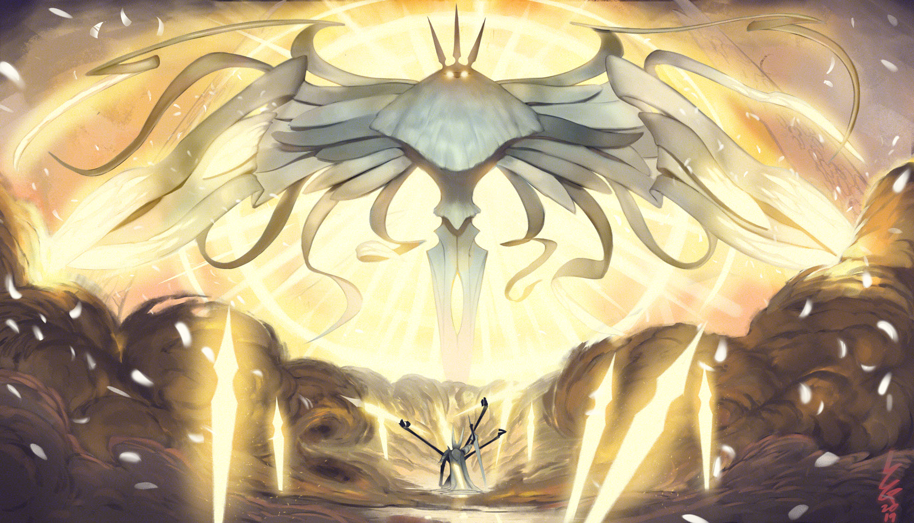

O Nascimento de Hallownest
Hallownest surge a partir do sacrifício do Rei Pálido. Antes um Wyrm colossal, ele renuncia à sua forma antiga e assume uma figura luminosa e consciente, oferecendo propósito aos insetos dispersos. Sob sua liderança, Hallownest cresce como um império subterrâneo de esplendor, ordem e hierarquia. Túneis extensos são cavados, cidades florescem e as profundezas do reino tornam-se lar de espécies complexas e culturas próprias. Cada canto do subterrâneo pulsa com a vida organizada e estruturada pelo Rei, que busca criar um paraíso de equilíbrio absoluto.

A Deusa Esquecida
Antes do surgimento do Rei Pálido, a Radiância reinava como deusa de luz, adorada pelos insetos que a veneravam como fonte de clareza, orientação e calor espiritual. Com o advento de Hallownest e a ascensão do Rei, a Radiância é relegada ao esquecimento, sua influência diminuída, mas não extinta. Ressentida, desperta uma fúria silenciosa, espalhando a Infecção — uma praga ardente que corrompe mentes e corpos, enlouquecendo aqueles que sucumbem ao seu poder. O brilho dourado de sua luz torna-se ameaçador, penetrando nas sombras de Hallownest e transformando o reino que antes era de ordem em caos silencioso e progressivo.
O Abismo e os Vasos
Em resposta à ameaça da Radiância, o Rei Pálido desce ao Abismo, o núcleo mais profundo e sombrio do reino. Ali, ele molda os Vasos, seres criados a partir do Vazio: entidades sem vontade ou emoção, recipientes perfeitos que poderiam conter a luz da Radiância. Entre esses Vasos, um é escolhido para tornar-se o Hollow Knight, um guardião destinado a ser selado com a deusa dentro de si. Preparado no Palácio Branco, o Hollow Knight é submetido a um ritual de isolamento e adestramento, projetado para manter o selo da Radiância intacto, assegurando que Hallownest permaneça livre da Infecção.
O Sacrifício Imperfeito
Apesar de sua criação meticulosa, o Hollow Knight carrega uma falha intrínseca: o afeto inadvertido do Rei Pálido durante sua formação enfraquece o selo. Assim, com o tempo, a Infecção retorna aos corredores do reino, lenta e silenciosa, penetrando nos cantos mais profundos e nas cidades esquecidas. O império outrora magnífico começa a ruir, e as criaturas que habitavam Hallownest tornam-se sombras de si mesmas, corrompidas pela praga que não pode mais ser contida totalmente.
O Retorno do Cavaleiro
É neste cenário devastado que surge o Cavaleiro, outro Vaso rejeitado pelo Rei Pálido, chamado de volta ao reino. Sem memórias completas de seu propósito inicial, ele atravessa Hallownest em busca de respostas, encontrando personagens fragmentados e histórias interrompidas pelo desastre. Durante sua jornada, ele enfrenta os Sonhadores — Monomon, Lurien e Herrah — cada um guardião de fragmentos do selo da Radiância, cuja derrota é essencial para impedir que a praga se espalhe ainda mais.
A Jornada pelos Fragmentos
O Cavaleiro percorre regiões diversas: os Penhascos Uivantes, onde o vento e os ecos das quedas lembram a fragilidade do reino; a Encruzilhada Esquecida, repleta de fósseis e ruínas que testemunham civilizações extintas; e o Pico de Cristal, com corredores repletos de cristais cintilantes que refletem a luz em padrões quase sagrados. Cada encontro é um teste de habilidade, coragem e determinação, e cada vitória ou derrota molda o destino do Cavaleiro e de Hallownest.
O Confronto final
Ao alcançar o coração do reino corrompido, o Cavaleiro enfrenta o Hollow Knight, agora tomado pela Infecção. Com a Dream Nail, ele acessa o núcleo da Radiância, mergulhando em sonhos e memórias do império. A batalha final é intensa e simbólica: luz contra Vazio, ordem contra caos. É uma luta que não envolve apenas força, mas também sacrifício e escolha moral, refletindo a história do Rei Pálido e dos Vasos criados no Abismo.
Destinos Possíveis
O desfecho é multifacetado. Em algumas linhas temporais, o Cavaleiro repete o sacrifício do Hollow Knight, selando a Radiância dentro de si e permitindo que Hallownest permaneça em relativa paz, embora com o custo de sua própria existência. Em outros, ele destrói a deusa com o poder do Vazio, libertando os insetos e encerrando o ciclo de sofrimento. Ainda há caminhos onde o Cavaleiro ascende a um novo plano de existência, enfrentando divindades e desafios sem fim, perpetuando a luta entre luz e Vazio em escala cósmica.
O Legado de Hallownest
Após o fim das batalhas, o reino permanece em ruínas. A Cidade das Lágrimas continua a chorar, suas ruas e túneis ecoando o passado pesado do império. Pequenas comunidades de insetos sobreviventes tentam reconstruir o que restou, mas o espectro da Infecção e da Radiância ainda paira. Hornet, filha do Rei Pálido, permanece como guardiã e testemunha, vigiando as cinzas do reino e aguardando o momento em que a história de Hallownest poderá finalmente ser reescrita, abrindo espaço para novas lendas em Silksong.